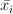
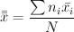

One-way analysis of variance uses one factor to categorize three or more populations. It is used to test hypotheses that three or more population means are equal. The null hypothesis H0 is μ1 = μ2 = ... = μk, where μi is the mean of population i of k populations.
The test statistic F is the ratio of two estimates of the variance common to the k populations:
When the null hypothesis is true, it has an F distribution with degrees of freedom given by
The test statistics F can be expressed as the ratio MS(treatment) / MS (error). The mean square (MS) and sum of squares (SS) are computed in order to obtain F.
SS(treatment) is a sum of squares representing the variation between the sample means:
where ni is the size of sample i,  is the mean of sample i, , and N is the sum of all sample sizes.
SS(error) is a sum of squares representing the variation that is assumed to be common to the populations:
SS(total) is a measure of the total variation in all the sample data:
MS(treatment) is the mean square for treatment:
MS(error) is the mean square for error:
To include a column in the analysis, select the column name in the Select the column to be included in the analysis: list and click the Add to list button. The selected column(s) will be added to the Responses list. To remove a column from the Responses list, select it and click the Remove from list button. Ctrl-click or shift-click to select multiple columns.
Click the Clear Input List button to clear the input list.
Enter the signicance level (a number between 0 and 1) in the Significance level text box.